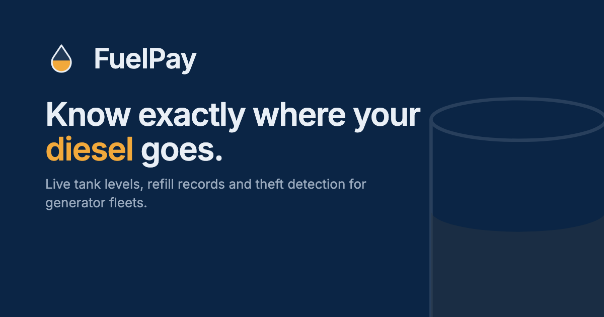

Energy infrastructure, engineered trust. This document is the source of truth for the mark, the palette, the type and the motion — and every colour in it has been machine-validated, not eyeballed.
FuelPay measures diesel in generator tanks across Nigerian sites and tells an operator three things: how much fuel they have, when a site will go dark, and when fuel has left a tank without being burned.
The brand has to carry engineering credibility — these numbers get billed against and used to accuse — while staying warm enough for an operations manager to live in all day. Deep ink navy for authority; precision amber, the colour of diesel itself, for the one thing being measured.
A fuel droplet cut by a fill line. It owns both halves of the product in one gesture — the fuel, and the measurement of it.
The geometry is exact, not eyeballed. The body is a circle at C = (16, 20) with r = 9.5; the apex sits at A = (16, 3), giving d = 17. The sides are the true tangents from the apex to the circle, meeting it at a half-angle of β = arccos(r/d) = 56.03° — that is, at (8.12, 14.69) and (23.88, 14.69).
<path d="M16 3 L8.12 14.69 A9.5 9.5 0 1 0 23.88 14.69 Z"/>
large-arc = 1 because the arc spans 247.9°; sweep = 0 because the direction is counter-clockwise in SVG's y-down space.
The silhouette is continuous. An early version clipped the outline into an upper and a lower half. Because the sides are straight tangent lines, severing the outline destroyed the shoulders where they meet the circle — and the mark read as a funnel, not a droplet. A teardrop's entire character lives in those shoulders. The outline is therefore drawn once, unbroken, over everything; only the fill is cut.
The surface sits at y = 16.9, leaving ~62% fill by area. That is deliberate: the mark should read as comfortably above any reorder threshold, which is the promise the product makes.
The fill line is the first thing to die. Below 24px, switch to level-mark-small.svg — the same construction, optically compensated: stroke 1.6 → 2.4 (0.8px is a grey smudge; 1.2px snaps to the grid) and tint 0.07 → 0.13 (a 7% tint vanishes against white at this size).
Two earlier attempts replaced the outline with two solid fields. Both read as a triangle sitting on a semicircle — that is literally the geometry once the silhouette is gone. Keeping the outline and thickening it is what actually survives.
Clear space on all four sides is 25% of the mark's height. Nothing — type, rule, image edge — enters it.
Mark height is 1.6× the wordmark's cap height, and the mark's fill line aligns to the wordmark's x-height median. That alignment is the reason the lockup reads as engineered rather than assembled. Wordmark is Inter 600 at −0.012em, in a single colour — the mark carries all the amber.
The supplied lockup files keep the wordmark as live <text>. For print or any environment without Inter, outline the type once from these files.
#64748B is deleted from the system. It measured 4.47:1 on the light surface and was being used at 11–12px in fourteen places — a WCAG AA failure at exactly the sizes it was used. --ink-muted is now 6.60:1 in light and 7.24:1 in dark.
A four-step traffic-light ramp cannot pass colourblind validation. The two ambers are metamers: under deuteranopia they separate by ΔE 1.3, where the floor is 6. This is a property of the semantics, not of colour picking.
So watch and low share a hue and differ by fill weight — soft tint with an outline versus solid — backed by an always-present text label. Hue is never the only channel.
Toggle this page to dark: the two-weight distinction is structurally identical in both themes.
Fuel level takes the blue; the load trace is achromatic steel. Fuel and load are drawn in separate stacked grids and never overlap, so a second hue was decoration — and dropping it removes a pair from the colourblind pairlist entirely.
Run node scripts/validate-palettes.mjs. It exits non-zero on any failure and writes reports/palette-validation.txt, which includes the failing four-step counter-example above so the constraint is documented rather than rediscovered.
Inter Variable for interface, IBM Plex Mono for serials, API keys and coordinates — Plex reads as instrumentation where a coding font would read as an IDE. Both are self-hosted; nothing is fetched from a CDN.
Every figure carries tabular-nums and slashed-zero, so a level ticking 998 → 1002 does not make its own label jitter.
1,167 L · 0.8 pf · 62.4% · −287 L · +823 L
Spacing is the 4px scale restricted to 1 2 3 4 5 6 8 10 12 16. Radius: control 6, card 10, panel 14, pill 999.
Elevation is theme-aware. In dark mode a drop shadow is invisible, so depth is carried by surface lift plus a border instead of by shadow.
Two easings carry meaning and must not be normalised away: decelerate = something arriving (a refill settling), accelerate = something leaving or failing (a tank draining). They came from the tank component and are now the vocabulary.
cubic-bezier(.4,0,.2,1)cubic-bezier(.16,1,.3,1)cubic-bezier(.7,0,.84,0)| Token | Duration | Use |
|---|---|---|
--dur-micro | 120ms | hover, chip press |
--dur-control | 180ms | toggles, focus |
--dur-surface | 240ms | panels, disclosure |
--dur-route | 320ms | page transitions |
--dur-level | 900ms | tank level change |
--dur-event | 1800ms | refill / drain |
Everything above is disabled under prefers-reduced-motion. The level still updates — instantly — so no information is lost.
| File | Purpose |
|---|---|
| logo/level-mark.svg | primary mark, 24px and up |
| logo/level-mark-small.svg | 16–24px; favicons rasterise from this |
| logo/level-mark-mono.svg | one currentColor; print, forced-colors |
| logo/level-mark-reversed.svg | on navy or dark surfaces |
| logo/level-mark-empty.svg | the 404 screen — the mark, drained |
| logo/lockup-*.svg | horizontal, stacked, tagline, reversed |
| icons/favicon.ico | 16/32/48 packed, PNG payloads |
| icons/apple-touch-icon-180.png | opaque navy — iOS composites black behind alpha |
| icons/maskable-512.png | 62% inset for Android's circle crop |
| icons/og-card-1200x630.png | social card |
Regenerate with node scripts/render-icons.mjs then node scripts/make-ico.mjs. Both use the Playwright already installed in fuelpay-web — no new tooling.
